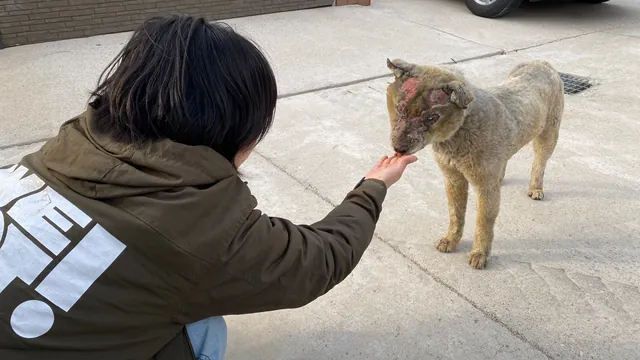
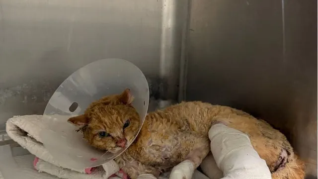
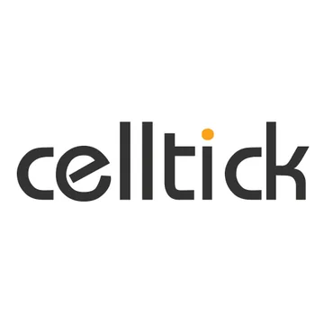
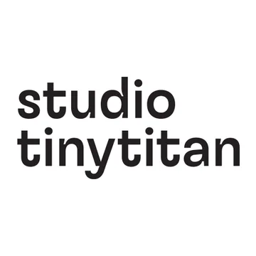
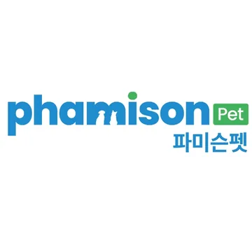

AAbused
구조
위액트는 음지에서 외면받고 학대받고 있는 동물들을 구조합니다. 구조부터 치료, 임시 보호, 위탁 그리고 입양까지, 구조견들이 새로운 삶을 시작하기 위해 필요한 모든 과정을 책임지고 관리합니다.
2018년 여름, 평범한 시민들의 작은 움직임에서 시작된 동물구조단체입니다.

사단법인 위액트는 활동가들의 봉사와 재능기부를 통해 운영됩니다.
위액트는 학대받는 동물들을 구조하고 치료하여 동물들이 자유를 느끼며 행복한 삶을 살 수 있도록 행동합니다. 2018년 7월부터 현재까지 1,898마리 동물들을 죽음의 문턱에서 구하고 1,670마리 동물들에게 평생 가족을 찾아주었습니다.

AAbused
위액트는 음지에서 외면받고 학대받고 있는 동물들을 구조합니다. 구조부터 치료, 임시 보호, 위탁 그리고 입양까지, 구조견들이 새로운 삶을 시작하기 위해 필요한 모든 과정을 책임지고 관리합니다.

CComforted
대부분의 구조동물들은 기생충이나 피부병 등 각종 질병들에 노출된 상태로 구조됩니다. 구조 직후 병원으로 이동해 정밀 검사를 받고, 정상적인 생활이 가능할 때까지 치료를 받습니다. 학대 트라우마가 심한 동물들의 경우 사회화 교육을 통해 재활 치료를 진행하기도 합니다.

TThriving
구조동물들이 입양 가능한 상태가 되면 입양 신청서와 가정 환경 검토, 심층 인터뷰를 통해 구조동물에게 가장 적합한 가정을 찾습니다. 입양 후에도 구조동물들의 상태를 지속적으로 모니터링합니다.
한 마리 동물을 구조하여 새로운 가족을 찾아주기까지 많은 사람들의 손길이 필요합니다. 위액트의 가치에 공감하는 국내외 단체와의 협력, 그리고 많은 후원사들의 지원 속에서 구조동물들에게 나은 삶을 선물해주고 있습니다.







협력 및 기업 후원 문의 hello@weactkorea.org